#library(tidyverse)
suppressPackageStartupMessages(suppressWarnings(library(tidyverse)))
library(dplyr)
library(ggplot2)Midterm Notes
Datasci 306
Midterm Thursday 10/9 during lecture
Lecture 1: 8-26
heights <- read_csv("https://ds306.org/data/survey1.csv")
glimpse(heights)Rows: 118
Columns: 3
$ Timestamp <chr> "8/26/2025 7:2…
$ `What is your sex?` <chr> "Male", "Male"…
$ `What is your height? (use whichever units you prefer)` <dbl> 72.00, 170.00,…Vectors
c(1,2,3)[1] 1 2 31:10 [1] 1 2 3 4 5 6 7 8 9 10c(1,2,3)[3][1] 3Operations on Dataframes
#help(glimpse)
glimpse(heights)Rows: 118
Columns: 3
$ Timestamp <chr> "8/26/2025 7:2…
$ `What is your sex?` <chr> "Male", "Male"…
$ `What is your height? (use whichever units you prefer)` <dbl> 72.00, 170.00,…#help(summary)
summary(heights) Timestamp What is your sex?
Length:118 Length:118
Class :character Class :character
Mode :character Mode :character
What is your height? (use whichever units you prefer)
Min. : 0.0017
1st Qu.: 63.8275
Median : 70.0000
Mean : 96.6379
3rd Qu.:163.7500
Max. :511.0000 #df$colName
heights$`What is your height? (use whichever units you prefer)` [1] 72.0000 170.0000 164.0000 6.0000 68.0000 162.0000 1.8500 184.0000
[9] 178.0000 70.0000 178.0000 510.0000 6.0000 73.0000 172.0000 160.0000
[17] 6.0000 6.0000 48.0000 183.0000 71.0000 175.0000 181.0000 165.0000
[25] 511.0000 64.0000 175.0000 1.0000 5.6500 6.2000 64.0000 176.0000
[33] 6.0000 69.0000 1.8900 162.0000 68.0000 175.0000 6.0000 180.0000
[41] 66.0000 64.0000 70.0000 63.0000 71.0000 69.0000 69.0000 67.0000
[49] 5.3000 172.0000 67.0000 165.0000 73.0000 67.0000 6.0000 67.0000
[57] 64.0000 5.4000 65.0000 76.0000 174.0000 68.0000 172.0000 71.0000
[65] 69.0000 176.0000 161.0000 70.0000 60.0000 165.0000 165.0000 163.0000
[73] 157.0000 73.0000 70.0000 68.0000 62.0000 72.0000 5.1100 69.0000
[81] 70.0000 172.0000 156.0000 71.0000 66.0000 1.7000 5.0000 0.0017
[89] 71.0000 65.0000 168.0000 70.0000 70.0000 180.0000 71.0000 66.0000
[97] 160.0000 64.0000 55.0000 5.4000 66.0000 65.0000 173.0000 62.0000
[105] 62.0000 173.0000 5.4000 157.0000 69.0000 63.7700 163.0000 66.0000
[113] 70.0000 171.0000 5.6000 177.0000 70.0000 55.0000Renaming Columns
#og colnames
colnames(heights)[1] "Timestamp"
[2] "What is your sex?"
[3] "What is your height? (use whichever units you prefer)"#Rename Columns
colnames(heights) <- c("timestamp", "sex", "height")
glimpse(heights)Rows: 118
Columns: 3
$ timestamp <chr> "8/26/2025 7:23:17", "8/26/2025 14:51:26", "8/26/2025 14:51:…
$ sex <chr> "Male", "Male", "Female", "Male", "Male", "Female", "Male", …
$ height <dbl> 72.00, 170.00, 164.00, 6.00, 68.00, 162.00, 1.85, 184.00, 17…ncol(heights)[1] 3nrow(heights)[1] 118mean(c(1,2,3))[1] 2#Will return 96.6379 - not under same unit (cm or in),
#too high or too low
mean(heights$height)[1] 96.6379#Hist looks wierd b/c the diff in units
hist(heights$height)
#Reassign so can type faster
h <- heights$height#return a vector of bools
h < 200 [1] TRUE TRUE TRUE TRUE TRUE TRUE TRUE TRUE TRUE TRUE TRUE FALSE
[13] TRUE TRUE TRUE TRUE TRUE TRUE TRUE TRUE TRUE TRUE TRUE TRUE
[25] FALSE TRUE TRUE TRUE TRUE TRUE TRUE TRUE TRUE TRUE TRUE TRUE
[37] TRUE TRUE TRUE TRUE TRUE TRUE TRUE TRUE TRUE TRUE TRUE TRUE
[49] TRUE TRUE TRUE TRUE TRUE TRUE TRUE TRUE TRUE TRUE TRUE TRUE
[61] TRUE TRUE TRUE TRUE TRUE TRUE TRUE TRUE TRUE TRUE TRUE TRUE
[73] TRUE TRUE TRUE TRUE TRUE TRUE TRUE TRUE TRUE TRUE TRUE TRUE
[85] TRUE TRUE TRUE TRUE TRUE TRUE TRUE TRUE TRUE TRUE TRUE TRUE
[97] TRUE TRUE TRUE TRUE TRUE TRUE TRUE TRUE TRUE TRUE TRUE TRUE
[109] TRUE TRUE TRUE TRUE TRUE TRUE TRUE TRUE TRUE TRUE#Removes heights where h < 200 is false
not_big <- h < 200
h[not_big] [1] 72.0000 170.0000 164.0000 6.0000 68.0000 162.0000 1.8500 184.0000
[9] 178.0000 70.0000 178.0000 6.0000 73.0000 172.0000 160.0000 6.0000
[17] 6.0000 48.0000 183.0000 71.0000 175.0000 181.0000 165.0000 64.0000
[25] 175.0000 1.0000 5.6500 6.2000 64.0000 176.0000 6.0000 69.0000
[33] 1.8900 162.0000 68.0000 175.0000 6.0000 180.0000 66.0000 64.0000
[41] 70.0000 63.0000 71.0000 69.0000 69.0000 67.0000 5.3000 172.0000
[49] 67.0000 165.0000 73.0000 67.0000 6.0000 67.0000 64.0000 5.4000
[57] 65.0000 76.0000 174.0000 68.0000 172.0000 71.0000 69.0000 176.0000
[65] 161.0000 70.0000 60.0000 165.0000 165.0000 163.0000 157.0000 73.0000
[73] 70.0000 68.0000 62.0000 72.0000 5.1100 69.0000 70.0000 172.0000
[81] 156.0000 71.0000 66.0000 1.7000 5.0000 0.0017 71.0000 65.0000
[89] 168.0000 70.0000 70.0000 180.0000 71.0000 66.0000 160.0000 64.0000
[97] 55.0000 5.4000 66.0000 65.0000 173.0000 62.0000 62.0000 173.0000
[105] 5.4000 157.0000 69.0000 63.7700 163.0000 66.0000 70.0000 171.0000
[113] 5.6000 177.0000 70.0000 55.0000length(h)[1] 118length(h[not_big])[1] 116hist(h[not_big])
h[h < 10] [1] 6.0000 1.8500 6.0000 6.0000 6.0000 1.0000 5.6500 6.2000 6.0000 1.8900
[11] 6.0000 5.3000 6.0000 5.4000 5.1100 1.7000 5.0000 0.0017 5.4000 5.4000
[21] 5.6000length(h[h < 10])[1] 21h_kept <- h[(h >= 50) & (h <= 200)]hist(h_kept)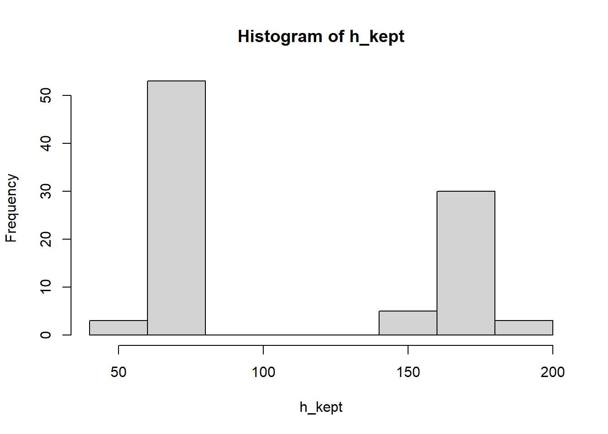
h_cm1 <- h_kept[h_kept < 100] * 2.54
h_cm2 <- h_kept[h_kept >= 100]
h_cm <- c(h_cm1, h_cm2)h_cm [1] 182.8800 172.7200 177.8000 185.4200 180.3400 162.5600 162.5600 175.2600
[9] 172.7200 167.6400 162.5600 177.8000 160.0200 180.3400 175.2600 175.2600
[17] 170.1800 170.1800 185.4200 170.1800 170.1800 162.5600 165.1000 193.0400
[25] 172.7200 180.3400 175.2600 177.8000 152.4000 185.4200 177.8000 172.7200
[33] 157.4800 182.8800 175.2600 177.8000 180.3400 167.6400 180.3400 165.1000
[41] 177.8000 177.8000 180.3400 167.6400 162.5600 139.7000 167.6400 165.1000
[49] 157.4800 157.4800 175.2600 161.9758 167.6400 177.8000 177.8000 139.7000
[57] 170.0000 164.0000 162.0000 184.0000 178.0000 178.0000 172.0000 160.0000
[65] 183.0000 175.0000 181.0000 165.0000 175.0000 176.0000 162.0000 175.0000
[73] 180.0000 172.0000 165.0000 174.0000 172.0000 176.0000 161.0000 165.0000
[81] 165.0000 163.0000 157.0000 172.0000 156.0000 168.0000 180.0000 160.0000
[89] 173.0000 173.0000 157.0000 163.0000 171.0000 177.0000hist(h_cm)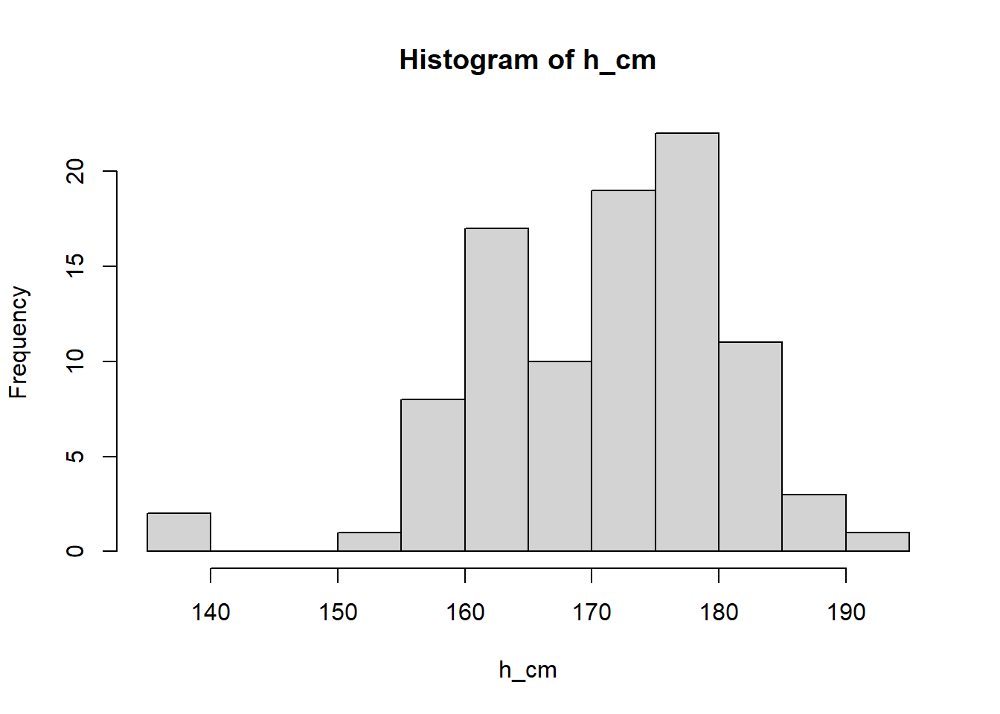
Histogram Breaks
hist(h_cm, breaks = c(100))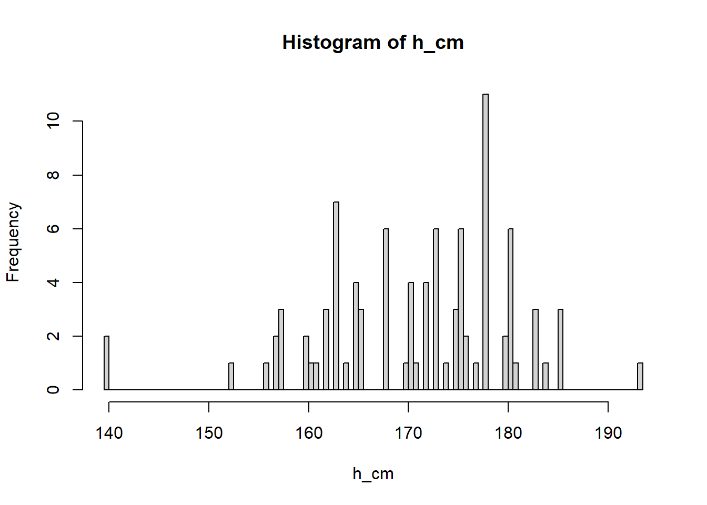
hist(h_cm, breaks = c(10))Categorial Variables
heights$sex [1] "Male" "Male" "Female"
[4] "Male" "Male" "Female"
[7] "Male" "Male" "Male"
[10] "Male" "Male" "Female"
[13] "Male" "Male" "Male"
[16] "Female" "Male" "Male"
[19] "Female" "Male" "Male"
[22] "Male" "Male" "Male"
[25] "Male" "Male" "Male"
[28] "Female" "Male" "Male"
[31] "Female" "Female" "Male"
[34] "Male" "Male" "Female"
[37] "Male" "Male" "Male"
[40] "Male" "Female" "Female"
[43] "Male" "Female" "Male"
[46] "Male" "Male" "Male"
[49] "Female" "Male" "Male"
[52] "Female" "Male" "Female"
[55] "Male" "Male" "Female"
[58] "Female" "Female" "Male"
[61] "Male" "Male" "Male"
[64] "Male" "Male" "Male"
[67] "Female" "Female" "Female"
[70] "Male" "Female" "Female"
[73] "Female" "Male" "Male"
[76] "Male" "Female" "Male"
[79] "Male" "Male" "Male"
[82] "Male" "Female" "Male"
[85] "Male" "Female" "Female"
[88] "Male" "Male" "Female"
[91] "Female" "Male" "Male"
[94] "Male" "Male" "Female"
[97] "Prefer not to say" "Female" "Female"
[100] "Female" "Male" "Female"
[103] "Male" "Female" "Male"
[106] "Female" "Female" "Female"
[109] "Male" "Female" "Female"
[112] "Male" "Female" "Male"
[115] "Male" "Male" "Male"
[118] "Female" table(heights$sex)
Female Male Prefer not to say
43 74 1 # prop table
prop.table(table(heights$sex))
Female Male Prefer not to say
0.364406780 0.627118644 0.008474576 s <- heights$sex
h[s == "Female"] [1] 164.00 162.00 510.00 160.00 48.00 1.00 64.00 176.00 162.00 66.00
[11] 64.00 63.00 5.30 165.00 67.00 64.00 5.40 65.00 161.00 70.00
[21] 60.00 165.00 163.00 157.00 62.00 156.00 1.70 5.00 65.00 168.00
[31] 66.00 64.00 55.00 5.40 65.00 62.00 173.00 5.40 157.00 63.77
[41] 163.00 70.00 55.00#dplyer
df <- filter(heights, height >= 50, height <= 200)
#if height < 100; multiply by 2.54, otherwise leave it alone
#Put it in new col called scaled_height
df2 <- mutate(df, scaled_height = ifelse(height < 100, 2.54 * height, height))hist(df2$scaled_height)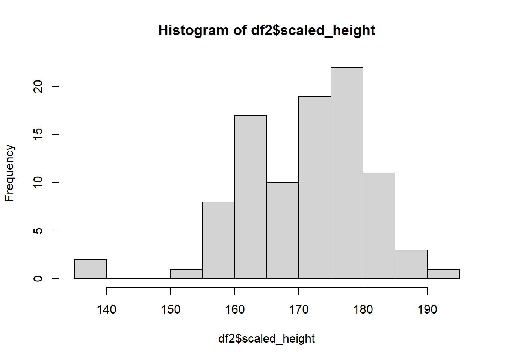
group_by(df2, sex)# A tibble: 94 × 4
# Groups: sex [3]
timestamp sex height scaled_height
<chr> <chr> <dbl> <dbl>
1 8/26/2025 7:23:17 Male 72 183.
2 8/26/2025 14:51:26 Male 170 170
3 8/26/2025 14:51:26 Female 164 164
4 8/26/2025 14:51:31 Male 68 173.
5 8/26/2025 14:51:31 Female 162 162
6 8/26/2025 14:51:32 Male 184 184
7 8/26/2025 14:51:32 Male 178 178
8 8/26/2025 14:51:33 Male 70 178.
9 8/26/2025 14:51:34 Male 178 178
10 8/26/2025 14:51:37 Male 73 185.
# ℹ 84 more rows# Mean height of df2 groups by sex
# Conditional Mean
summarize(group_by(df2, sex), mean(scaled_height))# A tibble: 3 × 2
sex `mean(scaled_height)`
<chr> <dbl>
1 Female 163.
2 Male 176.
3 Prefer not to say 160 ggplot
#ggplot
ggplot(df2) + geom_histogram(aes(x=scaled_height, fill=sex))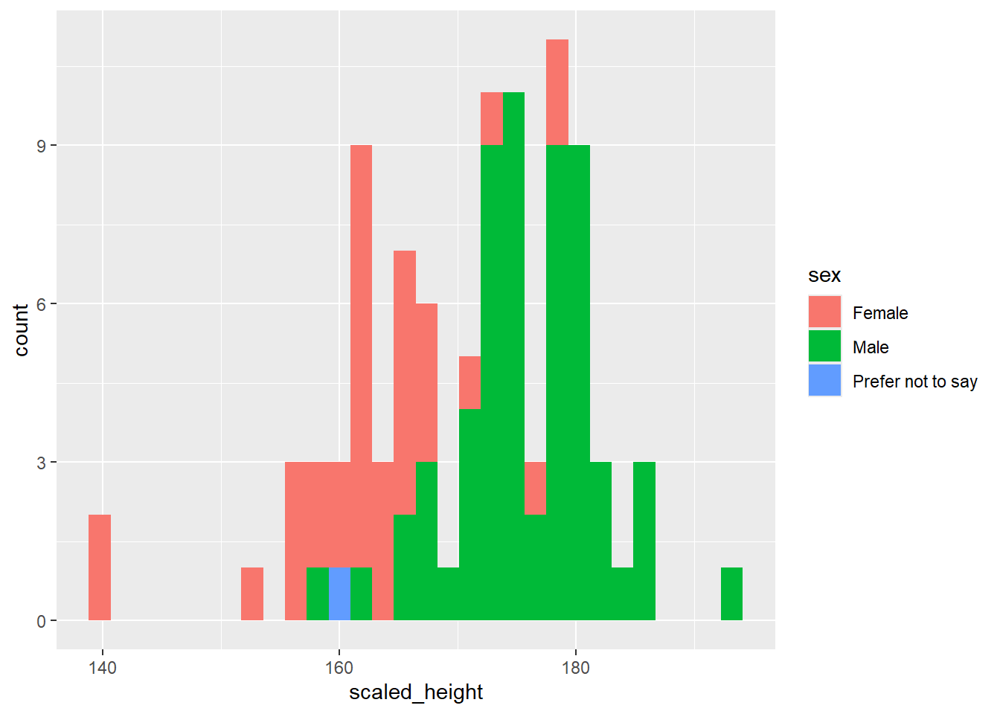
#Distributions by sex
ggplot(df2) + geom_histogram(aes(x=scaled_height)) + facet_grid(~ sex)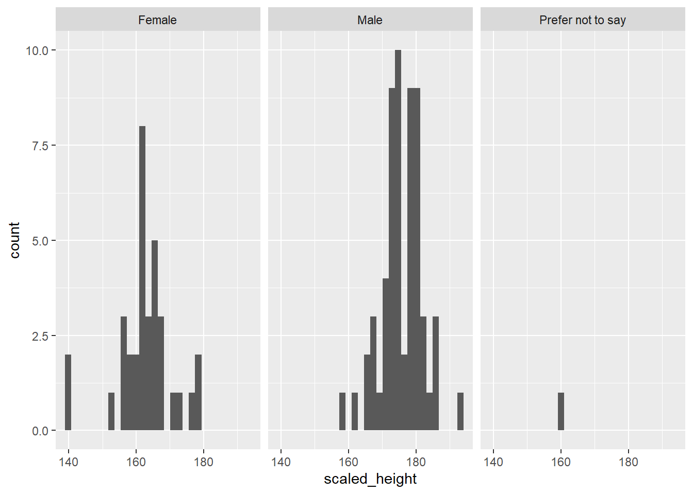
Lecture 2: 8-28
survey1 = read_csv("survey1.csv")
glimpse(survey1)Rows: 118
Columns: 3
$ Timestamp <chr> "8/26/2025 7:2…
$ `What is your sex?` <chr> "Male", "Male"…
$ `What is your height? (use whichever units you prefer)` <dbl> 72.00, 170.00,…Dataframe
A container of a bunch of vectors
nrow(survey1)[1] 118ncol(survey1)[1] 3apropos("rows") [1] ".rowSums" "arrows" "auto_browse"
[4] "bind_rows" "browseEnv" "browser"
[7] "browserCondition" "browserSetDebug" "browserText"
[10] "browseURL" "browseVignettes" "cur_group_rows"
[13] "db_query_rows" "group_rows" "panel_rows"
[16] "rows_append" "rows_delete" "rows_insert"
[19] "rows_patch" "rows_update" "rows_upsert"
[22] "rowsum" "rowsum.data.frame" "rowsum.default"
[25] "rowSums" "separate_rows" "separate_rows_"
[28] "xpdrows.data.frame"summary(survey1) Timestamp What is your sex?
Length:118 Length:118
Class :character Class :character
Mode :character Mode :character
What is your height? (use whichever units you prefer)
Min. : 0.0017
1st Qu.: 63.8275
Median : 70.0000
Mean : 96.6379
3rd Qu.:163.7500
Max. :511.0000 colnames(survey1) <- c('timestamp', 'sex', 'height')
survey1$height [1] 72.0000 170.0000 164.0000 6.0000 68.0000 162.0000 1.8500 184.0000
[9] 178.0000 70.0000 178.0000 510.0000 6.0000 73.0000 172.0000 160.0000
[17] 6.0000 6.0000 48.0000 183.0000 71.0000 175.0000 181.0000 165.0000
[25] 511.0000 64.0000 175.0000 1.0000 5.6500 6.2000 64.0000 176.0000
[33] 6.0000 69.0000 1.8900 162.0000 68.0000 175.0000 6.0000 180.0000
[41] 66.0000 64.0000 70.0000 63.0000 71.0000 69.0000 69.0000 67.0000
[49] 5.3000 172.0000 67.0000 165.0000 73.0000 67.0000 6.0000 67.0000
[57] 64.0000 5.4000 65.0000 76.0000 174.0000 68.0000 172.0000 71.0000
[65] 69.0000 176.0000 161.0000 70.0000 60.0000 165.0000 165.0000 163.0000
[73] 157.0000 73.0000 70.0000 68.0000 62.0000 72.0000 5.1100 69.0000
[81] 70.0000 172.0000 156.0000 71.0000 66.0000 1.7000 5.0000 0.0017
[89] 71.0000 65.0000 168.0000 70.0000 70.0000 180.0000 71.0000 66.0000
[97] 160.0000 64.0000 55.0000 5.4000 66.0000 65.0000 173.0000 62.0000
[105] 62.0000 173.0000 5.4000 157.0000 69.0000 63.7700 163.0000 66.0000
[113] 70.0000 171.0000 5.6000 177.0000 70.0000 55.0000mean(survey1$height)[1] 96.6379sd(survey1$height)[1] 81.55318median(survey1$height)[1] 70#first element
survey1$height[1][1] 72#last element
survey1$height[length(survey1$height)][1] 55#Access entry > 70
mask <- survey1$height > 70
survey1$height[mask] [1] 72 170 164 162 184 178 178 510 73 172 160 183 71 175 181 165 511 175 176
[20] 162 175 180 71 172 165 73 76 174 172 71 176 161 165 165 163 157 73 72
[39] 172 156 71 71 168 180 71 160 173 173 157 163 171 177mean(mask)[1] 0.440678Cleaning Data
#sorted entris of survey$heights
sort(survey1$height) [1] 0.0017 1.0000 1.7000 1.8500 1.8900 5.0000 5.1100 5.3000
[9] 5.4000 5.4000 5.4000 5.6000 5.6500 6.0000 6.0000 6.0000
[17] 6.0000 6.0000 6.0000 6.0000 6.2000 48.0000 55.0000 55.0000
[25] 60.0000 62.0000 62.0000 62.0000 63.0000 63.7700 64.0000 64.0000
[33] 64.0000 64.0000 64.0000 65.0000 65.0000 65.0000 66.0000 66.0000
[41] 66.0000 66.0000 66.0000 67.0000 67.0000 67.0000 67.0000 68.0000
[49] 68.0000 68.0000 68.0000 69.0000 69.0000 69.0000 69.0000 69.0000
[57] 69.0000 70.0000 70.0000 70.0000 70.0000 70.0000 70.0000 70.0000
[65] 70.0000 70.0000 71.0000 71.0000 71.0000 71.0000 71.0000 71.0000
[73] 72.0000 72.0000 73.0000 73.0000 73.0000 76.0000 156.0000 157.0000
[81] 157.0000 160.0000 160.0000 161.0000 162.0000 162.0000 163.0000 163.0000
[89] 164.0000 165.0000 165.0000 165.0000 165.0000 168.0000 170.0000 171.0000
[97] 172.0000 172.0000 172.0000 172.0000 173.0000 173.0000 174.0000 175.0000
[105] 175.0000 175.0000 176.0000 176.0000 177.0000 178.0000 178.0000 180.0000
[113] 180.0000 181.0000 183.0000 184.0000 510.0000 511.0000my_data = c(1,2,3,8,-1)
my_data < 0[1] FALSE FALSE FALSE FALSE TRUEifelse(my_data < 0, "neg", "pos")[1] "pos" "pos" "pos" "pos" "neg"mean(c(1, NA, 3), na.rm=T)[1] 2dplyr
filter
filter(survey1, height == 70)# A tibble: 9 × 3
timestamp sex height
<chr> <chr> <dbl>
1 8/26/2025 14:51:33 Male 70
2 8/26/2025 14:51:53 Male 70
3 8/26/2025 14:52:05 Female 70
4 8/26/2025 14:52:08 Male 70
5 8/26/2025 14:52:11 Male 70
6 8/26/2025 14:52:21 Male 70
7 8/26/2025 14:52:22 Male 70
8 8/26/2025 14:52:54 Female 70
9 8/26/2025 15:03:56 Male 70Sorting with arrange()
##ascending by default, use desc for descending
arrange(survey1, desc(height))# A tibble: 118 × 3
timestamp sex height
<chr> <chr> <dbl>
1 8/26/2025 14:51:45 Male 511
2 8/26/2025 14:51:36 Female 510
3 8/26/2025 14:51:32 Male 184
4 8/26/2025 14:51:40 Male 183
5 8/26/2025 14:51:43 Male 181
6 8/26/2025 14:51:51 Male 180
7 8/26/2025 14:52:26 Male 180
8 8/26/2025 14:51:32 Male 178
9 8/26/2025 14:51:34 Male 178
10 8/26/2025 14:55:01 Male 177
# ℹ 108 more rowsfiltering columns with select()
select(survey1, sex, height)# A tibble: 118 × 2
sex height
<chr> <dbl>
1 Male 72
2 Male 170
3 Female 164
4 Male 6
5 Male 68
6 Female 162
7 Male 1.85
8 Male 184
9 Male 178
10 Male 70
# ℹ 108 more rows# or
select(survey1, -timestamp)# A tibble: 118 × 2
sex height
<chr> <dbl>
1 Male 72
2 Male 170
3 Female 164
4 Male 6
5 Male 68
6 Female 162
7 Male 1.85
8 Male 184
9 Male 178
10 Male 70
# ℹ 108 more rowscolumn operation with mutate()
#creates new cols in df that are calculated w/ existing dfs
mutate(survey1, height_cm = height * 2.54)# A tibble: 118 × 4
timestamp sex height height_cm
<chr> <chr> <dbl> <dbl>
1 8/26/2025 7:23:17 Male 72 183.
2 8/26/2025 14:51:26 Male 170 432.
3 8/26/2025 14:51:26 Female 164 417.
4 8/26/2025 14:51:28 Male 6 15.2
5 8/26/2025 14:51:31 Male 68 173.
6 8/26/2025 14:51:31 Female 162 411.
7 8/26/2025 14:51:32 Male 1.85 4.70
8 8/26/2025 14:51:32 Male 184 467.
9 8/26/2025 14:51:32 Male 178 452.
10 8/26/2025 14:51:33 Male 70 178.
# ℹ 108 more rowsCreating Pipelines
survey1_final <- survey1 |>
filter(between(height, 150, 200)) |>
arrange(height) |>
select(sex, height)
survey1_final# A tibble: 38 × 2
sex height
<chr> <dbl>
1 Female 156
2 Female 157
3 Female 157
4 Female 160
5 Prefer not to say 160
6 Female 161
7 Female 162
8 Female 162
9 Female 163
10 Female 163
# ℹ 28 more rowsLecture 3: 9-2
survey1 |>
filter((height > 400) | between(height, 4, 7)) |>
pluck("height") -> height_gpt
height_gpt [1] 6.00 510.00 6.00 6.00 6.00 511.00 5.65 6.20 6.00 6.00
[11] 5.30 6.00 5.40 5.11 5.00 5.40 5.40 5.60Lecture 4: 9-4
library(nycflights13)
flights# A tibble: 336,776 × 19
year month day dep_time sched_dep_time dep_delay arr_time sched_arr_time
<int> <int> <int> <int> <int> <dbl> <int> <int>
1 2013 1 1 517 515 2 830 819
2 2013 1 1 533 529 4 850 830
3 2013 1 1 542 540 2 923 850
4 2013 1 1 544 545 -1 1004 1022
5 2013 1 1 554 600 -6 812 837
6 2013 1 1 554 558 -4 740 728
7 2013 1 1 555 600 -5 913 854
8 2013 1 1 557 600 -3 709 723
9 2013 1 1 557 600 -3 838 846
10 2013 1 1 558 600 -2 753 745
# ℹ 336,766 more rows
# ℹ 11 more variables: arr_delay <dbl>, carrier <chr>, flight <int>,
# tailnum <chr>, origin <chr>, dest <chr>, air_time <dbl>, distance <dbl>,
# hour <dbl>, minute <dbl>, time_hour <dttm>#Which airport is busiest
flights |> group_by(origin) |> summarize(n=n())# A tibble: 3 × 2
origin n
<chr> <int>
1 EWR 120835
2 JFK 111279
3 LGA 104662count(flights, origin, dest)# A tibble: 224 × 3
origin dest n
<chr> <chr> <int>
1 EWR ALB 439
2 EWR ANC 8
3 EWR ATL 5022
4 EWR AUS 968
5 EWR AVL 265
6 EWR BDL 443
7 EWR BNA 2336
8 EWR BOS 5327
9 EWR BQN 297
10 EWR BTV 931
# ℹ 214 more rows#which month is busiest
flights |> group_by(month) |> summarize(n=n())# A tibble: 12 × 2
month n
<int> <int>
1 1 27004
2 2 24951
3 3 28834
4 4 28330
5 5 28796
6 6 28243
7 7 29425
8 8 29327
9 9 27574
10 10 28889
11 11 27268
12 12 28135#top 5 busiest days
flights |> count(month, day) |> arrange(desc(n))# A tibble: 365 × 3
month day n
<int> <int> <int>
1 11 27 1014
2 7 11 1006
3 7 8 1004
4 7 10 1004
5 12 2 1004
6 7 18 1003
7 7 25 1003
8 7 12 1002
9 7 9 1001
10 7 17 1001
# ℹ 355 more rows#least busiest days 5
flights |> count(year, month, day) |> top_n(5, -n)# A tibble: 6 × 4
year month day n
<int> <int> <int> <int>
1 2013 1 19 674
2 2013 1 26 680
3 2013 8 31 680
4 2013 10 12 676
5 2013 11 28 634
6 2013 11 29 661#Which carrier has highest delay
flights |>
group_by(carrier) |>
summarise(avg_delay = mean(dep_delay, na.rm = T)) |>
arrange(-avg_delay)# A tibble: 16 × 2
carrier avg_delay
<chr> <dbl>
1 F9 20.2
2 EV 20.0
3 YV 19.0
4 FL 18.7
5 WN 17.7
6 9E 16.7
7 B6 13.0
8 VX 12.9
9 OO 12.6
10 UA 12.1
11 MQ 10.6
12 DL 9.26
13 AA 8.59
14 AS 5.80
15 HA 4.90
16 US 3.78relational data
airlines# A tibble: 16 × 2
carrier name
<chr> <chr>
1 9E Endeavor Air Inc.
2 AA American Airlines Inc.
3 AS Alaska Airlines Inc.
4 B6 JetBlue Airways
5 DL Delta Air Lines Inc.
6 EV ExpressJet Airlines Inc.
7 F9 Frontier Airlines Inc.
8 FL AirTran Airways Corporation
9 HA Hawaiian Airlines Inc.
10 MQ Envoy Air
11 OO SkyWest Airlines Inc.
12 UA United Air Lines Inc.
13 US US Airways Inc.
14 VX Virgin America
15 WN Southwest Airlines Co.
16 YV Mesa Airlines Inc. left_join()
flights |>
group_by(carrier) |>
summarise(avg_delay = mean(dep_delay, na.rm = T)) |>
left_join(airlines, by = "carrier") |>
arrange(-avg_delay)# A tibble: 16 × 3
carrier avg_delay name
<chr> <dbl> <chr>
1 F9 20.2 Frontier Airlines Inc.
2 EV 20.0 ExpressJet Airlines Inc.
3 YV 19.0 Mesa Airlines Inc.
4 FL 18.7 AirTran Airways Corporation
5 WN 17.7 Southwest Airlines Co.
6 9E 16.7 Endeavor Air Inc.
7 B6 13.0 JetBlue Airways
8 VX 12.9 Virgin America
9 OO 12.6 SkyWest Airlines Inc.
10 UA 12.1 United Air Lines Inc.
11 MQ 10.6 Envoy Air
12 DL 9.26 Delta Air Lines Inc.
13 AA 8.59 American Airlines Inc.
14 AS 5.80 Alaska Airlines Inc.
15 HA 4.90 Hawaiian Airlines Inc.
16 US 3.78 US Airways Inc. airports |> filter(faa == "DTW")# A tibble: 1 × 8
faa name lat lon alt tz dst tzone
<chr> <chr> <dbl> <dbl> <dbl> <dbl> <chr> <chr>
1 DTW Detroit Metro Wayne Co 42.2 -83.4 645 -5 A America/New_York# Do ppl fly south in the winter?
flights |>
left_join(airports, by=c("dest" = "faa")) |>
select(month, lat) |>
group_by(month) |>
summarize(mean_abs_lat = mean(abs(lat), na.rm = T))# A tibble: 12 × 2
month mean_abs_lat
<int> <dbl>
1 1 35.9
2 2 35.9
3 3 35.7
4 4 35.8
5 5 36.2
6 6 36.2
7 7 36.2
8 8 36.2
9 9 36.3
10 10 36.2
11 11 35.9
12 12 35.7Lecture 5: 9-9
load("spotify_mpd_001.RData")
playlist |> sample_frac(0.01)# A tibble: 10 × 10
id pid name collaborative modified_at num_tracks num_albums
<int> <int> <chr> <lgl> <date> <int> <int>
1 775593 775592 "throwback" FALSE 2017-10-30 235 195
2 821739 821738 "Nelly Furtado" FALSE 2017-03-31 25 14
3 387706 387705 "Cody Simpson" FALSE 2015-01-28 6 4
4 206726 206725 "sad songs " FALSE 2017-09-22 25 25
5 719332 719331 "Eminem" FALSE 2017-07-23 23 14
6 671563 671562 "Old School Hi… FALSE 2016-02-20 26 21
7 869721 869720 "sad" FALSE 2017-01-15 44 41
8 598423 598422 "country love … FALSE 2017-10-16 70 64
9 62542 62541 "gym" FALSE 2017-09-26 115 108
10 826024 826023 "Summer 2k17" FALSE 2017-06-07 59 50
# ℹ 3 more variables: num_followers <int>, duration_ms <int>, num_artists <int>artist |> filter(id == 9019)# A tibble: 1 × 2
id name
<int> <chr>
1 9019 Nipsey Hussletrack |> left_join(artist, by = c("artist_id" = "id"))# A tibble: 33,620 × 5
id track_name duration_ms artist_id name
<int> <chr> <int> <int> <chr>
1 57 Still Got Time 188490 211800 ZAYN
2 62 It's Alright Now 249946 144928 Bombay Bicycle Club
3 139 Yee - Original Mix 210000 246984 Deorro
4 245 La belle âme 220879 176325 Fakear
5 265 Ready to Bleed 212040 279904 Prayers
6 577 Kundiman 339053 181828 Silent Sanctuary
7 765 Awesome God - Live 318026 268773 Hillsong United
8 815 Locked Up 235066 37436 Akon
9 835 Animals 227840 122096 Sherry?
10 853 Diego 242346 103601 Tory Lanez
# ℹ 33,610 more rowscolnames(track_attr) [1] "track_id" "artists" "album_name" "track_name"
[5] "popularity" "duration_ms" "explicit" "danceability"
[9] "energy" "key" "loudness" "mode"
[13] "speechiness" "acousticness" "instrumentalness" "liveness"
[17] "valence" "tempo" "time_signature" "track_genre" track |> inner_join(track_attr, by = c("id" = "track_id"))# A tibble: 1,862 × 23
id track_name.x duration_ms.x artist_id artists album_name track_name.y
<int> <chr> <int> <int> <chr> <chr> <chr>
1 4187 Suicidal Thoug… 170226 219633 The No… Ready to … Suicidal Th…
2 6969 Golden Slumber… 91760 133618 The Be… Abbey Roa… Golden Slum…
3 7291 Harlem Shake 196664 79170 Baauer Harlem Sh… Harlem Shake
4 9732 Holy Is the Lo… 251933 259407 Chris … Arriving Holy Is The…
5 13754 Hit That Jive 203050 42448 Gramat… SB2 Hit That Ji…
6 17250 Soap 209426 230385 Melani… Cry Baby … Soap
7 17281 Play It Again 226866 7361 Luke B… Crash My … Play It Aga…
8 17779 Do You Hear Th… 123160 233311 Aaron … Les Misér… Do You Hear…
9 18781 An Eagle In Yo… 385520 94834 Boards… Music Has… An Eagle In…
10 19576 Ritual (feat. … 237472 230618 Marshm… Ritual (f… Ritual (fea…
# ℹ 1,852 more rows
# ℹ 16 more variables: popularity <dbl>, duration_ms.y <dbl>, explicit <lgl>,
# danceability <dbl>, energy <dbl>, key <dbl>, loudness <dbl>, mode <dbl>,
# speechiness <dbl>, acousticness <dbl>, instrumentalness <dbl>,
# liveness <dbl>, valence <dbl>, tempo <dbl>, time_signature <dbl>,
# track_genre <chr>playlist# A tibble: 1,000 × 10
id pid name collaborative modified_at num_tracks num_albums
<int> <int> <chr> <lgl> <date> <int> <int>
1 721119 721118 july 15 FALSE 2015-08-02 33 24
2 792404 792403 Pagode FALSE 2014-05-29 27 19
3 624620 624619 Piano FALSE 2017-09-03 19 16
4 906302 906301 august '17 FALSE 2017-09-02 47 41
5 347366 347365 Reception play… FALSE 2016-05-13 61 56
6 689931 689930 kewl FALSE 2017-05-09 179 159
7 530439 530438 Rock FALSE 2017-10-12 123 101
8 145633 145632 All FALSE 2017-06-27 81 50
9 56739 56738 Latin Mix FALSE 2017-10-29 89 82
10 954479 954478 boii FALSE 2017-10-21 51 34
# ℹ 990 more rows
# ℹ 3 more variables: num_followers <int>, duration_ms <int>, num_artists <int>playlist_track# A tibble: 66,571 × 3
playlist_id pos track_id
<int> <int> <int>
1 1196 0 1047267
2 1196 1 1834301
3 1196 2 597415
4 1196 3 1173249
5 1196 4 1979927
6 1196 5 1900507
7 1196 6 337753
8 1196 7 599323
9 1196 8 983626
10 1196 9 2170020
# ℹ 66,561 more rowstrack |>
left_join(playlist_track, by=c("id" = "track_id")) |>
filter(playlist_id == "1196") |>
left_join(playlist, by = c("playlist_id" = "id"))# A tibble: 58 × 15
id track_name duration_ms.x artist_id playlist_id pos pid name
<int> <chr> <int> <int> <int> <int> <int> <chr>
1 18483 Glorious Ruins … 533146 131194 1196 28 1195 Jesu…
2 63014 I Can Trust You 357533 40650 1196 51 1195 Jesu…
3 75458 Be Thou My Visi… 403053 25765 1196 37 1195 Jesu…
4 139583 Cold Is The Nig… 195011 123084 1196 46 1195 Jesu…
5 170199 The Lord Is Gra… 342920 28544 1196 34 1195 Jesu…
6 191121 I Was Wrong 264657 123084 1196 47 1195 Jesu…
7 296408 Nothing Without… 241746 22369 1196 48 1195 Jesu…
8 337753 Oh How I Need Y… 243493 153985 1196 6 1195 Jesu…
9 341748 You Speak 329613 48043 1196 56 1195 Jesu…
10 352778 Grace So Glorio… 407253 134425 1196 49 1195 Jesu…
# ℹ 48 more rows
# ℹ 7 more variables: collaborative <lgl>, modified_at <date>,
# num_tracks <int>, num_albums <int>, num_followers <int>,
# duration_ms.y <int>, num_artists <int>#How many playlists
nrow(playlist)[1] 1000#How many songs does each playlist have
playlist$num_tracks |> median()[1] 50#or
count(playlist_track, playlist_id)$n |> median()[1] 50#How many playlist does each song appear
count(playlist_track, track_id) |>
left_join(track, by=c("track_id" = "id")) |>
top_n(10, n) # A tibble: 12 × 5
track_id n track_name duration_ms artist_id
<int> <int> <chr> <int> <int>
1 149079 42 Mask Off 204600 55017
2 315515 42 Location 219080 241277
3 573136 48 One Dance 173986 131668
4 649448 45 iSpy (feat. Lil Yachty) 253106 183621
5 906631 45 Cut It (feat. Young Dolph) 222600 59814
6 1041890 47 Congratulations 220293 78225
7 1093026 43 Redbone 326933 268292
8 1261051 42 Bad and Boujee (feat. Lil Uzi Vert) 343150 258736
9 1637518 44 Ignition - Remix 186066 105561
10 2128660 53 HUMBLE. 177000 96864
11 2218841 43 Shape of You 233712 252555
12 2257361 48 Broccoli (feat. Lil Yachty) 225205 203349count(playlist_track, track_id) |> summarize(mean(n))# A tibble: 1 × 1
`mean(n)`
<dbl>
1 1.98#When are playlists created
playlist |> count(modified_at) |> ggplot() +
geom_point(aes(x = modified_at, y = n))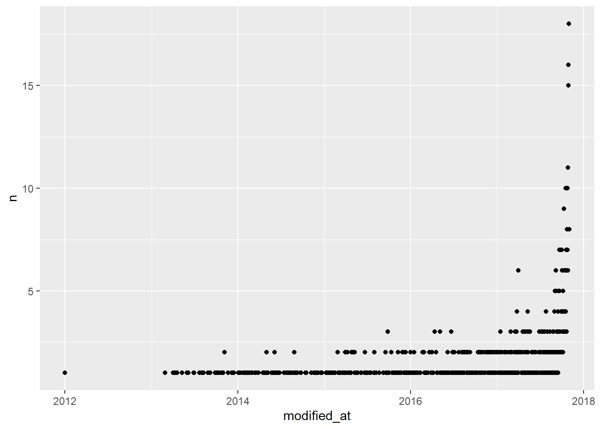
Song Charts
load("hot100_2017.RData")
hot100_2017# A tibble: 567 × 54
Song Artist w1 w2 w3 w4 w5 w6 w7 w8 w9 w10
<chr> <chr> <dbl> <dbl> <dbl> <dbl> <dbl> <dbl> <dbl> <dbl> <dbl> <dbl>
1 Starboy The W… 1 3 4 4 5 8 7 12 14 17
2 Black Bea… Rae S… 2 1 2 3 3 6 9 14 16 16
3 Closer The C… 3 4 3 5 4 3 5 7 5 5
4 24K Magic Bruno… 4 5 5 7 10 11 12 15 13 15
5 Juju On T… Zay H… 5 6 11 17 18 30 33 42 48 NA
6 Side To S… Arian… 6 7 6 9 12 12 13 18 24 34
7 Let Me Lo… DJ Sn… 7 8 8 14 16 16 18 20 28 31
8 Don't Wan… Maroo… 8 11 7 8 9 7 6 9 17 19
9 Bad Things Machi… 9 12 10 10 6 4 4 5 6 10
10 Fake Love Drake 10 9 9 11 11 9 8 11 12 13
# ℹ 557 more rows
# ℹ 42 more variables: w11 <dbl>, w12 <dbl>, w13 <dbl>, w14 <dbl>, w15 <dbl>,
# w16 <dbl>, w17 <dbl>, w18 <dbl>, w19 <dbl>, w20 <dbl>, w21 <dbl>,
# w22 <dbl>, w23 <dbl>, w24 <dbl>, w25 <dbl>, w26 <dbl>, w27 <dbl>,
# w28 <dbl>, w29 <dbl>, w30 <dbl>, w31 <dbl>, w32 <dbl>, w33 <dbl>,
# w34 <dbl>, w35 <dbl>, w36 <dbl>, w37 <dbl>, w38 <dbl>, w39 <dbl>,
# w40 <dbl>, w41 <dbl>, w42 <dbl>, w43 <dbl>, w44 <dbl>, w45 <dbl>, …Pivot
#Find average rank
hot100_long <-
hot100_2017 |>
pivot_longer(cols = starts_with("w"),
names_prefix = "w",
names_to = "week",
values_to = "rank") |>
mutate(week = as.integer(week)) |> print()# A tibble: 29,484 × 4
Song Artist week rank
<chr> <chr> <int> <dbl>
1 Starboy The Weeknd Featuring Daft Punk 1 1
2 Starboy The Weeknd Featuring Daft Punk 2 3
3 Starboy The Weeknd Featuring Daft Punk 3 4
4 Starboy The Weeknd Featuring Daft Punk 4 4
5 Starboy The Weeknd Featuring Daft Punk 5 5
6 Starboy The Weeknd Featuring Daft Punk 6 8
7 Starboy The Weeknd Featuring Daft Punk 7 7
8 Starboy The Weeknd Featuring Daft Punk 8 12
9 Starboy The Weeknd Featuring Daft Punk 9 14
10 Starboy The Weeknd Featuring Daft Punk 10 17
# ℹ 29,474 more rowsflights |> count(month, origin) |>
pivot_wider(names_from = origin, values_from = n)# A tibble: 12 × 4
month EWR JFK LGA
<int> <int> <int> <int>
1 1 9893 9161 7950
2 2 9107 8421 7423
3 3 10420 9697 8717
4 4 10531 9218 8581
5 5 10592 9397 8807
6 6 10175 9472 8596
7 7 10475 10023 8927
8 8 10359 9983 8985
9 9 9550 8908 9116
10 10 10104 9143 9642
11 11 9707 8710 8851
12 12 9922 9146 9067Lecture 6: 9-11
library(lubridate)
wday("2025-10-1", label = T)[1] Wed
Levels: Sun < Mon < Tue < Wed < Thu < Fri < Sat#Are playlist morelikely to be created on weekends
playlist |>
mutate(wday = wday(modified_at, label = T)) |>
select(pid, modified_at, wday) |> count(wday) -> playlist_wdays
playlist_wdays# A tibble: 7 × 2
wday n
<ord> <int>
1 Sun 137
2 Mon 141
3 Tue 166
4 Wed 120
5 Thu 163
6 Fri 157
7 Sat 116#Significance Test
playlist_wdays |> pluck("n") |> chisq.test()
Chi-squared test for given probabilities
data: pluck(playlist_wdays, "n")
X-squared = 16.96, df = 6, p-value = 0.009431#Which artist appears most in playlists
playlist |> left_join(playlist_track, by = c("id" = "playlist_id")) |>
select(pid, track_id) |>
left_join(track, by = c("track_id" = "id")) |>
distinct(pid, artist_id) |>
left_join(artist, by = c("artist_id" = "id")) |>
count(name) |> arrange(desc(n))# A tibble: 9,614 × 2
name n
<chr> <int>
1 Drake 216
2 Rihanna 152
3 Kanye West 142
4 Kendrick Lamar 132
5 Ed Sheeran 121
6 The Weeknd 119
7 Calvin Harris 114
8 Big Sean 108
9 The Chainsmokers 106
10 Post Malone 105
# ℹ 9,604 more rowscombn()
combn(c("Eminem", "Rihanna", "Dr. Dre"), 2) [,1] [,2] [,3]
[1,] "Eminem" "Eminem" "Rihanna"
[2,] "Rihanna" "Dr. Dre" "Dr. Dre"Which artist had the most top 100 hits 2017
String split
str_split("Beyonce & Jay-Z", " & ")[[1]]
[1] "Beyonce" "Jay-Z" str_split("Beyonce Featuring Jay-Z", " Featuring ")[[1]]
[1] "Beyonce" "Jay-Z" hot100_2017_long |>
mutate(artists = str_split(Artist, " (&|Featuring|x) ")) |>
unnest(artists) |>
count(artists, sort=TRUE)# A tibble: 347 × 2
artists n
<chr> <int>
1 Kendrick Lamar 165
2 Drake 159
3 Future 141
4 Gucci Mane 138
5 Lil Uzi Vert 133
6 Migos 132
7 Travis Scott 124
8 Khalid 120
9 Ed Sheeran 119
10 Quavo 118
# ℹ 337 more rowsLecture 9-16 (come back to later)
Lecture 9-25
load("a2weather.RData")
colnames(a2weather) [1] "id" "year" "month" "element" "VALUE1" "MFLAG1" "QFLAG1"
[8] "SFLAG1" "VALUE2" "MFLAG2" "QFLAG2" "SFLAG2" "VALUE3" "MFLAG3"
[15] "QFLAG3" "SFLAG3" "VALUE4" "MFLAG4" "QFLAG4" "SFLAG4" "VALUE5"
[22] "MFLAG5" "QFLAG5" "SFLAG5" "VALUE6" "MFLAG6" "QFLAG6" "SFLAG6"
[29] "VALUE7" "MFLAG7" "QFLAG7" "SFLAG7" "VALUE8" "MFLAG8" "QFLAG8"
[36] "SFLAG8" "VALUE9" "MFLAG9" "QFLAG9" "SFLAG9" "VALUE10" "MFLAG10"
[43] "QFLAG10" "SFLAG10" "VALUE11" "MFLAG11" "QFLAG11" "SFLAG11" "VALUE12"
[50] "MFLAG12" "QFLAG12" "SFLAG12" "VALUE13" "MFLAG13" "QFLAG13" "SFLAG13"
[57] "VALUE14" "MFLAG14" "QFLAG14" "SFLAG14" "VALUE15" "MFLAG15" "QFLAG15"
[64] "SFLAG15" "VALUE16" "MFLAG16" "QFLAG16" "SFLAG16" "VALUE17" "MFLAG17"
[71] "QFLAG17" "SFLAG17" "VALUE18" "MFLAG18" "QFLAG18" "SFLAG18" "VALUE19"
[78] "MFLAG19" "QFLAG19" "SFLAG19" "VALUE20" "MFLAG20" "QFLAG20" "SFLAG20"
[85] "VALUE21" "MFLAG21" "QFLAG21" "SFLAG21" "VALUE22" "MFLAG22" "QFLAG22"
[92] "SFLAG22" "VALUE23" "MFLAG23" "QFLAG23" "SFLAG23" "VALUE24" "MFLAG24"
[99] "QFLAG24" "SFLAG24" "VALUE25" "MFLAG25" "QFLAG25" "SFLAG25" "VALUE26"
[106] "MFLAG26" "QFLAG26" "SFLAG26" "VALUE27" "MFLAG27" "QFLAG27" "SFLAG27"
[113] "VALUE28" "MFLAG28" "QFLAG28" "SFLAG28" "VALUE29" "MFLAG29" "QFLAG29"
[120] "SFLAG29" "VALUE30" "MFLAG30" "QFLAG30" "SFLAG30" "VALUE31" "MFLAG31"
[127] "QFLAG31" "SFLAG31"a2weather |>
filter(month == 2, year == 1893) |>
select(starts_with("VALUE")) |>
select(26:31)# A tibble: 4 × 6
VALUE26 VALUE27 VALUE28 VALUE29 VALUE30 VALUE31
<dbl> <dbl> <dbl> <dbl> <dbl> <dbl>
1 -6 39 33 -9999 -9999 -9999
2 -156 -89 -50 -9999 -9999 -9999
3 -9999 -9999 178 -9999 -9999 -9999
4 0 0 0 -9999 -9999 -9999a2weather_tidy# A tibble: 48,636 × 12
date station tmin tmax prcp snow snwd tmax_flag tmin_flag
* <date> <chr> <dbl> <dbl> <dbl> <dbl> <dbl> <chr> <chr>
1 1891-10-01 USC00200230 7.8 20.6 NA NA NA "" ""
2 1891-10-02 USC00200230 13.9 26.7 NA NA NA "" ""
3 1891-10-03 USC00200230 16.1 26.1 NA NA NA "" ""
4 1891-10-04 USC00200230 11.1 22.8 7.6 NA NA "" ""
5 1891-10-05 USC00200230 6.7 13.9 NA NA NA "" ""
6 1891-10-06 USC00200230 5 14.4 NA NA NA "" ""
7 1891-10-07 USC00200230 5.6 10.6 4.1 NA NA "" ""
8 1891-10-08 USC00200230 3.3 13.9 NA NA NA "" ""
9 1891-10-09 USC00200230 3.9 15 NA NA NA "" ""
10 1891-10-10 USC00200230 5 16.7 NA NA NA "" ""
# ℹ 48,626 more rows
# ℹ 3 more variables: prcp_flag <chr>, snow_flag <chr>, snwd_flag <chr>a2weather_tidy |> count(year = year(date)) |> ggplot() +
geom_line(aes(x = year, y = n))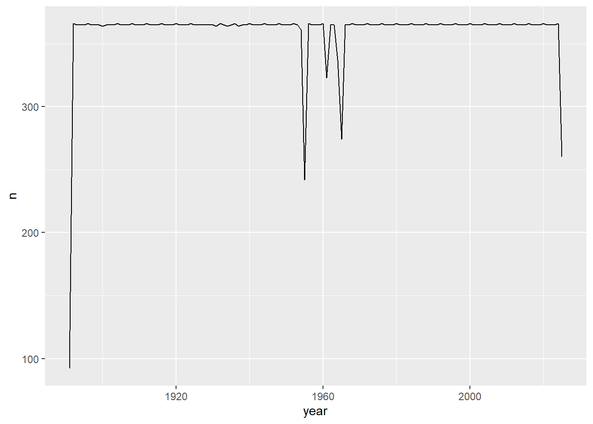
#Daily Temperature
a2weather_tidy |>
filter(date >= today() - ddays(30)) |>
mutate(tmax = tmax * 1.8 + 32) |>
ggplot() + geom_line(aes(x = date, y = tmax))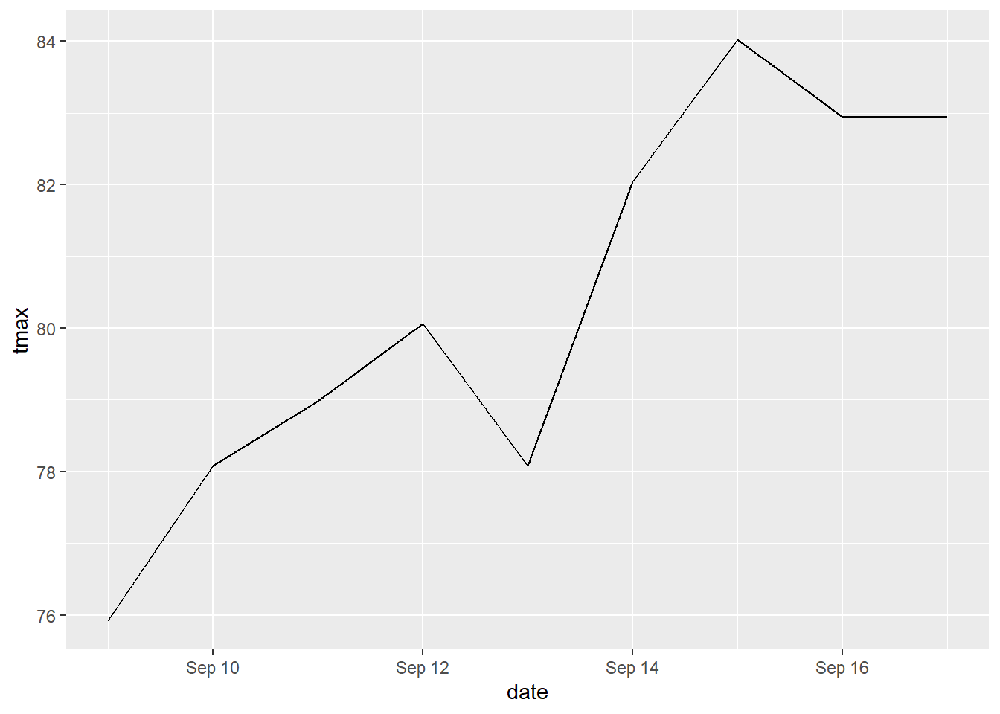
a2weather_tidy |>
mutate(month = floor_date(date, "year")) |>
group_by(month) |>
summarize(tmax = mean(tmax, rm.na = T)) |>
ggplot(aes(x = month, y = tmax)) +
geom_line() + geom_smooth(method="lm") +
labs(
title = "Monthly Avg Temp in A2",
x = "Month",
y = "temp (C)"
)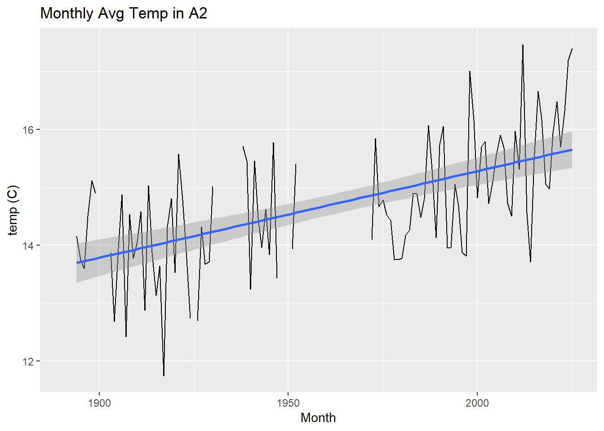
Statistical Modeling
Y = f(x) + \(\in\)
Y = Outcome
f = model function
x = explainer
\(\in\) = noise
Fitting a linear regression model
mdl <- lm(tmax ~ date, data = a2weather_tidy)
summary(mdl)
Call:
lm(formula = tmax ~ date, data = a2weather_tidy)
Residuals:
Min 1Q Median 3Q Max
-35.870 -10.395 1.116 10.463 26.266
Coefficients:
Estimate Std. Error t value Pr(>|t|)
(Intercept) 1.489e+01 5.545e-02 268.56 <2e-16 ***
date 4.307e-05 3.756e-06 11.47 <2e-16 ***
---
Signif. codes: 0 '***' 0.001 '**' 0.01 '*' 0.05 '.' 0.1 ' ' 1
Residual standard error: 11.73 on 48510 degrees of freedom
(124 observations deleted due to missingness)
Multiple R-squared: 0.002704, Adjusted R-squared: 0.002684
F-statistic: 131.5 on 1 and 48510 DF, p-value: < 2.2e-16coef(mdl)["date"] * 365 * 100 date
1.572183 summary(mdl)$r.squared[1] 0.002704191Residuals
library(modelr)
a2weather_tidy |>
add_residuals(mdl) |>
ggplot(aes(x = resid)) +
geom_histogram() +
labs(
title = "residuals from lin regression model",
x = "residuals"
) 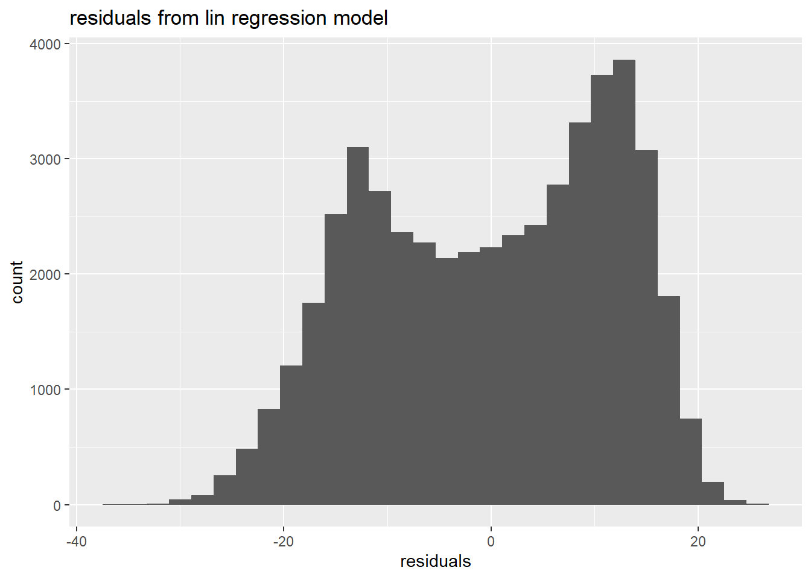
Lecture 9-30
Seasonal Trends
load("weather.RData")